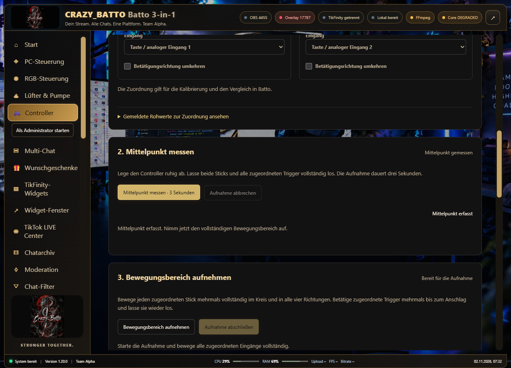
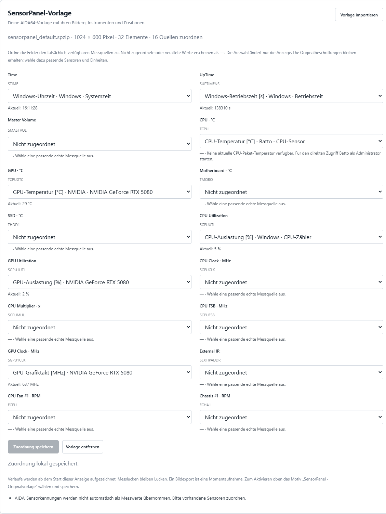
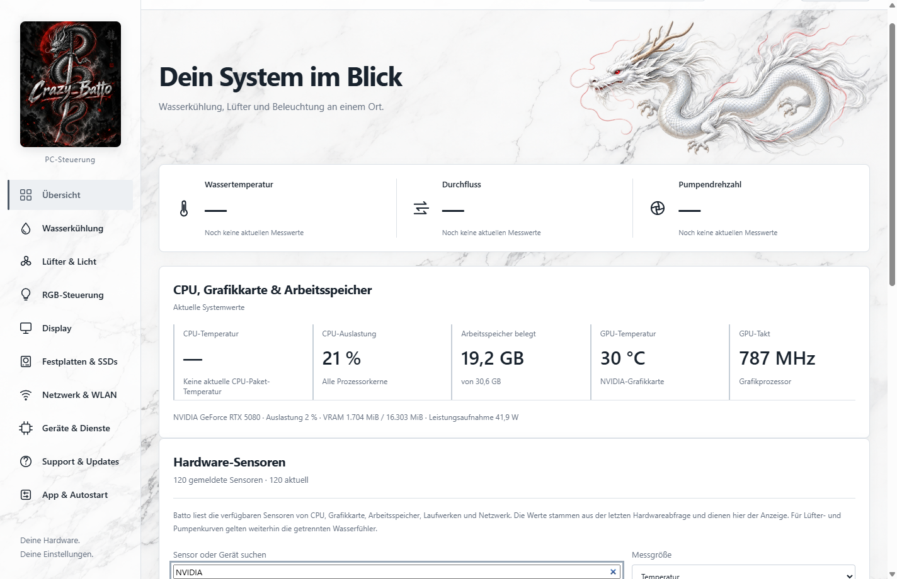
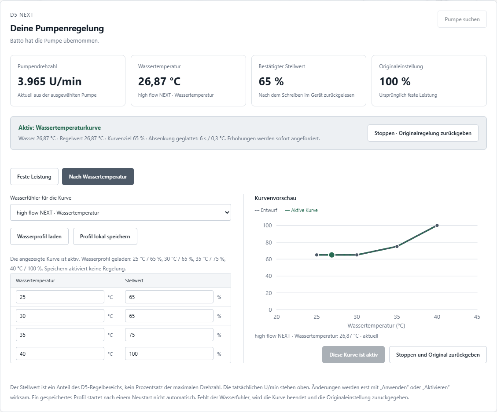
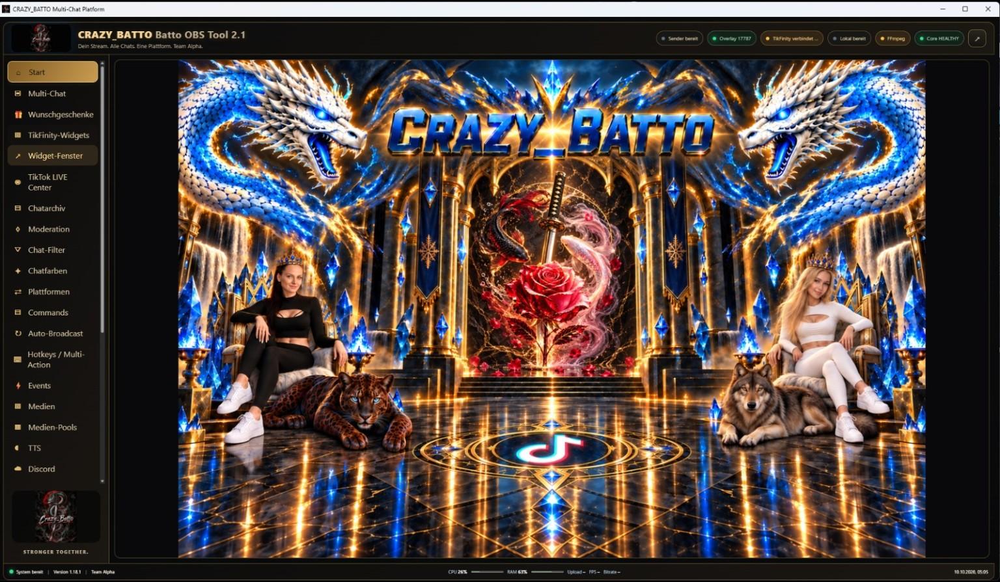
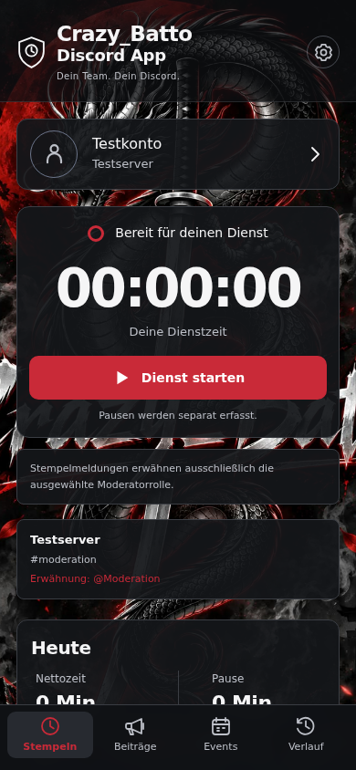
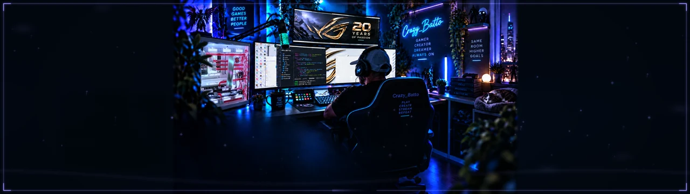
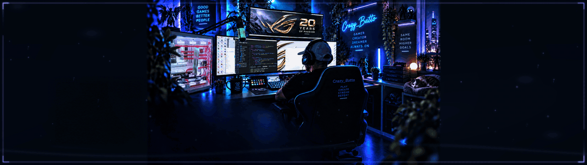

Hardware · Gaming · Kooperationspartner
Crazy_Batto.
Gemeinsam mit meinen Kooperationspartnern
36 Jahre alt
Social-Media-Content-Creator
für Hardware und Gaming
Über mich
Persönliche Vorstellung & Ausstattung
Am 2022 habe ich wieder angefangen, mich mit PCs zu beschäftigen. Seitdem habe ich ein Ziel: meinen PC ständig zu verbessern. Dabei habe ich mich auf eine Marke konzentriert: ASUS ROG.
Mit der Zeit habe ich auch angefangen, Grafikkarten zu sammeln. Zu meiner Sammlung gehören die Matrix 5870, die Matrix GTX 780 Ti, die Poseidon GTX 780, die HD 7970, die MARS 760 Dual GPU und noch viele weitere Modelle.
Auch Mainboards gehören zu meiner Sammlung, darunter das ROG Crosshair VIII und zweimal das ROG Crosshair VIII Formula.
Mein besonderes Schmuckstück ist das ROG CROSSHAIR X870E GLACIAL – das Herz meines neuen Systems. Dazu gehört auch die ROG-ASTRAL-RTX5080. Mehr darüber erfährst du unter „Mein Gaming-Setup“.
Meine Setup-Geschichte
Vom Anfang bis heute
Hardware & Inspiration
Für dein Setup
 Meine Auswahl
Meine Auswahl
Produkte & Empfehlungen
Hardware und Zubehör entdecken – mit Bildern, meinen Beschreibungen und direkten Produktlinks.
Produkte ansehen Individuelle Beleuchtung
Individuelle Beleuchtung
RGB Slotcover
Entdecke beleuchtete Slotblenden für dein eigenes Setup.
Website öffnenCrazy_RGB · Batto 3-in-1
Batto 3-in-1 verbindet meine Streaming-Werkzeuge mit PC-Steuerung, Wasserkühlung, RGB und Controller Studio in einer Windows-Suite. Mit meinem Drachenlogo und den vorhandenen Marmor-Designs für den PC-Bereich.
Streaming und Multi-Chat
Die vorhandenen Suite-Bereiche für Multi-Chat, Moderation, OBS, Overlays, Alerts, Aktionen und Medien bleiben integriert. Verbindungen und Plattformberechtigungen richtest du passend zu deinem Setup ein.
Controller Studio und Kalibrierung
Tatsächlich verfügbare XInput- und Browser-Eingänge ansehen, Sticks prüfen und Mitte sowie Bewegungsbereich aufnehmen. Rohwerte und Korrektur bleiben unterscheidbar. Profile speichern, passend zum Gerät importieren und zurücksetzen. Die Korrektur wirkt innerhalb von Batto; Spiele und Controller-Firmware werden dadurch nicht umgestellt.
SensorPanel importieren
Unterstützte SPZIP-Layouts aus deinen eigenen Dateien übernehmen und ihre Messwertfelder echten Batto-Sensoren zuordnen. Bilder und Positionen stammen aus deinem importierten Archiv. Fehlende oder veraltete Werte werden als nicht verfügbar angezeigt. Die fremden Originalgrafiken sind nicht im Installer enthalten; AIDA64 muss für diese Anzeige nicht laufen.
Echte Hardware-Sensoren
Direkte Messwerte unterstützter CPU-, GPU-, Speicher-, Laufwerks- und Netzwerksensoren. Nach Gerät oder Messwert suchen und verfügbare Werte für das Display auswählen. Für CPU-Werte sind Administratorrechte und der vorhandene PawnIO-Treiber nötig. HWiNFO und AIDA64 müssen nicht laufen.
Corsair- und ASUS-RGB
Farben und Effekte für tatsächlich erkannte, unterstützte Geräte. Der mitgelieferte RGB-Baustein bindet Corsair-RAM und ausgewählte ASUS-Geräte direkt an. Administratorrechte und der erforderliche Hardwaretreiber können nötig sein. Lian-Li-Strimer sind nicht Bestandteil der Steuerung.
Lüfter zuordnen
Unterstützte Corsair-LINK-Lüfter einzeln identifizieren, benennen und ihre Reihenfolge speichern. Im bisherigen echten Hub-Test wurden neun RX-RGB-Lüfter erkannt. Ihre Positionen im Gehäuse ordnest du selbst zu.
D5 NEXT nach Wassertemperatur
Feste Pumpenleistung oder eine Kurve nach echtem Wasserfühler. Gemessene Drehzahl, zurückgelesener Stellwert und Originaleinstellung bleiben getrennt sichtbar. Reguläres Stoppen gibt die ursprüngliche Regelung zurück.
Eigene Displaybilder
Eigener Hintergrund, Linien und bis zu sechs wählbare Messwertfelder. Anzeige auf einem Windows-Monitor oder Export als Bild. Fehlende und veraltete Messwerte werden angezeigt; die direkte Übertragung auf das ASUS-GLACIAL-LCD ist noch nicht eingebaut.
Installation & Einstellungen
Windows-Installer mit Desktop- und Startmenü-Verknüpfung. Programmeinstellungen und Sicherungen verwaltest du in der Suite. Für benötigte Hardwarezugriffe steht „Als Administrator starten“ zur Verfügung.
Festplatten, WLAN & ASUS
Laufwerke und verfügbare PC-Werte. Der korrigierte ASUS-Startweg erkennt installiertes Armoury Crate; die Antennenseite wird dort über das Mainboard gewählt. Ein eigener Knopf öffnet die Windows-WLAN-Einstellungen. ASUS-Antennenfunktionen bleiben in Armoury Crate.








Controllerkalibrierung: Sie korrigiert Werte innerhalb von Batto. Die XInput-Mittelpunktmessung wurde am angeschlossenen Controller geprüft; die vollständige Endlagenkalibrierung sowie PlayStation- und NoName-Geräte sind noch nicht physisch bestätigt. Der Installer ist derzeit nicht digital signiert.
Sensorprüfung aus Version 0.6.4: Die laufende App zeigte ohne Administratorrechte 120 echte Sensorwerte und stellte sie im Displaykatalog bereit. Ein separater Administrator-Lesetest lieferte CPU-Temperaturen des Ryzen 7 9800X3D. Er führte ausschließlich Leseabfragen aus. Dieser Sensorleser greift nicht auf Mainboard, USB oder Netzteil zu; die vorhandenen Wasserkühlungs- und RGB-Verbindungen bleiben eigene Anbindungen.
Echte Geräteprüfungen: D5-Leistung, Wasserkurve und Rückgabe wurden zuvor am Gerät geprüft. Beim Corsair-Hub wurden RGB-Kommandos und die Freigabe getestet. Bei der ASUS RTX 5080 wurden Farbregister über eine neue Verbindung zurückgelesen und die Ursprungsfarbe wiederhergestellt; die sichtbare Farbwirkung ist noch nicht bestätigt.
Noch offen: Direkte ASUS-GLACIAL-LCD-Übertragung und PWM-/RGB-Steuerung des EURUX-Hubs. Die abschließende Hardwareübergabe in der laufenden App steht noch aus. EURUX liefert derzeit bestätigte Drehzahlmessungen. Eine universelle Steuerung aller Mainboards und Herstellerfunktionen wird nicht zugesichert.
Batto 3-in-1 herunterladen
Vollständige Suite für Windows 64 Bit. Installer, ZIP und Präsentation sind öffentlich. Den Lizenzschlüssel erhältst du nach Registrierung, E-Mail-Bestätigung und deiner persönlich von Crazy_Batto freigegebenen Anfrage in deinem Konto.
Unterstützte Funktionen richten sich nach deiner Hardware. Hilfe bekommst du über meinen Kontaktbereich.
Eigene Projekte
Meine Software

Meine Ideen. Mein Tool.
Multi-Chat, RGB-Vorschau, Lüfterkurven und Jarvis – ein erster Einblick in mein eigenes Softwareprojekt.
In Entwicklung · Noch nicht freigegeben Das Projekt kennenlernen
Dein Team. Dein Discord.
Moderationsdienste erfassen, Stream-Abfragen stellen, Bilder teilen und Discord-Events anlegen – mit Server- und Kanalauswahl.
Android · Zugang nach meiner Freigabe Die Discord-App kennenlernenCrazy_Batto Player
Eigene Audiodateien abspielen und die Playlist für die Community erweitern.
Zum Media PlayerMit Name und E-Mail registrieren, Zugang anfragen und nach meiner Freigabe die Android-App herunterladen.
Gemeinsam mehr erreichen
Kooperationspartner
Lerne meine Kooperationspartner kennen. Entdecke ihre Profile, Beiträge und Social-Media-Kanäle.
Sarah / L4e ImLuNa
Profil entdeckenMichelle
Profil entdeckenFáelán
Profil entdeckenG___Gaming
Profil entdeckenDevilwolf666
Profil entdeckenPartnerprofile werden geladen …
Kontakt
Social Media
Hier findest du mich und unsere Community.

